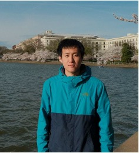

Wireless Networks And Intelligent Systems
Yi Wei
Ph.D. Student in Computer Science
Saint Louis University
I design intelligent wireless systems that connect the physical and digital worlds—from visible light and underwater optical networks to autonomous aerial platforms and digital twins.

Building the networks behind a more connected world.
Research areas
My work spans communication, sensing, control, and machine intelligence for next-generation networks.
Meet the team
Researchers working across intelligent wireless networks, optical communication and sensing, and digital twins.
Latest news
Research and academic updates will be posted here.
Selected work
Research in optical networking, wireless systems, and intelligent control.
Teaching
Teaching information will be added when available.
Academic service
Contributing to the wireless networking community through editorial, organizational, and peer-review roles.
Lab life
Moments from our research, conferences, demonstrations, and community.
Research with us
Interested in intelligent wireless systems?
I welcome inquiries from motivated students interested in wireless networking, optical communication, AI-driven control, and digital twins.
Email Yi